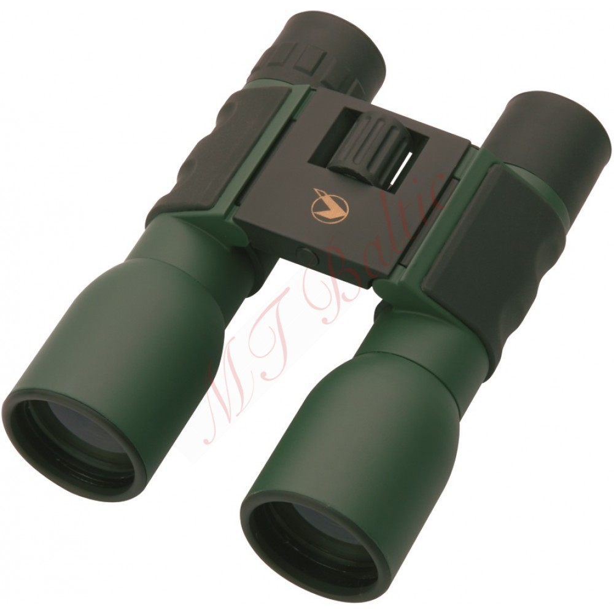

žiūronai
Žiūronai, Optinė įranga Žiūronai

Logo Informacija Kaip pirkti +370 604 01010 I-V 10:00-19:00, VI 10:00-14:00 Fotoparduotuvė Nuotraukos Fotosuvenyrai Fotopaslaugos Bendruomenė Prisijunk Prisijunk Registruokis Slaptažodžio priminimas Krepšelis 0 Katalogas Fotoaparatai ir jų priedai Fotoaparatai ir jų priedai Rodyti visus Veidrodiniai fotoaparatai Sisteminiai fotoaparatai Skaitmeniniai fotoaparatai Vidutinio formato fotoaparatai Vienkartiniai fotoaparatai Momentiniai fotoaparatai LOMO priedai Blykstės Blyksčių priedai Distanciniai valdymai Vaizdo ieškikliai LCD ekranų apsaugos Fotoaparatų baterijos Fotoaparatų baterijų laikikliai Baterijų įkrovikliai Valymo priemonės Programos Laidai ir adapteriai Apsaugos nuo lietaus ir smūgių Povandeniniai dėklai GPS adapteriai Fotoaparatų priedai Specialios paskirties fotoaparatai Momentinių fotoaparatų priedai Objektyvai ir jų priedai Objektyvai ir jų priedai Rodyti visus Veidrodinių fotoaparatų objektyvai Sisteminių fotoaparatų objektyvai Vaizdo kamerų objektyvai Objektyvai telefonams Lomo objektyvai Objektyvų filtrai Objektyvų blendos Objektyvų valymo priemonės Objektyvų dangteliai Objektyvų konverteriai Perėjimo žiedai Kiti objektyvų priedai Filtrų priedai Vaizdo kameros ir jų priedai Vaizdo kameros ir jų priedai Rodyti visus Vaizdo kameros Veiksmo kameros 360 kameros Stabilizatoriai Monitoriai kameroms Tvirtinimai ir laikikliai Kamerų laidai ir adapteriai Įkrovikliai ir baterijos Bėgiai Kranai Mikrofonai Priedai Vaizdo kasetės Internetinės kameros Vaizdo registratoriai Live stream įranga Vaizdo stebėjimo / apsaugos kameros Fotostudijos įranga Fotostudijos įranga Rodyti visus 360 fotografijos stalai Portatyviniai akumuliatoriai Apšvietimo rinkiniai Studijinės blykstės Nuolatinės šviesos lempos Šviesdėžės ir skėčiai Stovai ir tvirtinimo sistemos Reflektoriai Paleidėjai ir priėmėjai Fonų sistemos ir fonai Eksponometrai Mobilūs apšvietimo rinkiniai Šviesos sklaidytuvai Fotostudijos įrangos priedai Fotografija lauke Dėklai, kuprinės ir diržai Dėklai, kuprinės ir diržai Rodyti visus Dėklai ir krepšiai Kuprinės Lagaminai SpyderHolster ir kitos nešiojimo sistemos Skaitmeninės laikmenos Skaitmeninės laikmenos Rodyti visus SDHC kortelės MicroSD kortelės CF kortelės XQD kortelės Išoriniai SSD diskai Išoriniai HDD diskai USB laikmenos CD, DVD, Blu-ray laikmenos Kortelių skaitytuvai Skaitmeninių laikmenų priedai Kitos MS kortelės Trikojai, monopodai Trikojai, monopodai Rodyti visus Trikojai Monopodai Galvos Trikojų priedai Vaizdo filmavimui IT technika fotografams IT technika fotografams Rodyti visus Stacionarūs kompiuteriai Monitoriai Rašaliniai ir foto spausdintuvai Eksploatacinės medžiagos spausdintuvams Skeneriai Grafinės planšetės Kalibravimo įranga Medicininiai monitoriai Optinė įranga Optinė įranga Rodyti visus Žiūronai Teleskopai Mikroskopai Optinės įrangos priedai Monokliai Tradicinė ir momentinė fotografija Tradicinė ir momentinė fotografija Rodyti visus Spalvotos juostelės Nespalvotos juostelės Ryškalai Fotopopierius Fotoplokštelės momentiniams fotoaparatams Giljotinos (popieriaus pjaustyklės) Fotojuostų priedai Dronai ir dronų priedai Dronai ir dronų priedai Rodyti visus Dronai Dronų priedai Dovanos fotografui Dovanos fotografui Rodyti visus Foto aksesuarai Foto rūbai Prekės pigiau (Demo) Prekės pigiau (Demo) Rodyti visus Ekspozicijos prekės Namų dekoras ir dovanos Namų dekoras ir dovanos Rodyti visus Fotorėmeliai Fotoalbumai Šviestuvai, žibintai Baras Baldai Dirbtinės gėlės ir dekoracijos Dovanos vyrams Dovanų pakavimas Dėžutės ir skrynelės Dėžutės papuošalams, bižuterija Elektrinės girliandos Figūrėlės ir taupyklės Galanterija moterims Kanceliarinės prekės Laikrodžiai ir barometrai Laisvalaikis, kelionės Lauko dekoracijos Namų aksesuarai Pakabinamos dekoracijos Prekės vaikams Proginės šventės Reprodukcijos ir paveikslai Stalo elementai Tekstilė Vazos ir vazonai Veidrodžiai Dovanų kuponas Dovanų kuponas Rodyti visus Prekėms įsigyti Sveikata Profesionalai pataria Pageidavimų sąrašas Pagalba Kaip pirkti? +370 604 01010 I-V 10:00-19:00, VI 10:00-14:00 Fotoaparatai ir jų priedai Objektyvai ir jų priedai Vaizdo kameros ir jų priedai Fotostudijos įranga Dėklai, kuprinės ir diržai Skaitmeninės laikmenos Trikojai, monopodai IT technika fotografams Optinė įranga Tradicinė ir momentinė fotografija Dronai ir dronų priedai Prekės pigiau (Demo) Parduotuvė Pirkimo taisyklės ir sąlygos Pristatymo taisyklės Grąžinimo taisyklės Privatumo politika Kontaktai Nuotraukos Nuotraukų gamyba internetu Įkelti nuotraukas Naujausios viešos nuotraukos Foto Suvenyrai Fotosuvenyrai gamyba internetu Marškinėliai Puodeliai Foto Nuoma Fototechnikos nuoma Fotoaparatų nuoma Objektyvų nuoma Fototechnikos priedų nuoma Kontaktai Įmonės kodas: 305025925 PVM mokėtojo kodas: LT100012296914 Buveinės adresas: Baltijos pr. 123-33, LT-93224 Klaipėda Telefonas: +370 604 01010 El.paštas: [email protected] Fotoparduotuvė Foto gamyba Fotosuvenyrai Fotopaslaugos Prekių katalogas / Optinė įranga / Žiūronai Žiūronai
Prekės tipas Žiūronai 663 Objektyvai 9 Priedai 2 Lazeriniai atstumo matuokliai 2 Korpusai 1 Statusas prekyboje Yra 471 Teirautis 206 Pristatymo laikas 5-19 d.d. 212 1-4 d.d. 121 10-14 d.d. 112 11-14 d.d. 102 5-10 d.d. 76 14-17 d.d. 30 0-2 d.d. 11 0-4 d.d. 7 10-19 d.d. 1 Gamintojas Nikon 120 Helios 60 FOCUS OPTICS 45 Kowa 45 RICOH PENTAX 38 Celestron 36 DeltaOptical 33 Pentax 29 Bushnell 26 Bresser 21 FUJIFILM 20 Tasco 19 Olympus 18 Focus 11 Braun Phototechnik 10 Kite Optics 10 Carson Optical 9 Canon 8 Dörr 8 Vanguard 6 Danubia 5 LogiLink 3 Logilink 3 Luna 3 Optisan 3 Swarovski 3 BRESSER 2 Barr Stroud 2 Byomic 2 DigiFox 2 LUNA 2 Vixen 2 Yukon 2 Bresser Junior 1 Cooler Master 1 D-Link 1 Digitus 1 Velbon 1 Vortex 1 Daugiau Prizmės tipas quot Roof quot prizmė 54 quot Porro quot prizmė 50 Priartinimas, X 8.0 40 10.0 38 12.0 9 7.0 8 16.0 3 20.0 3 3.0 2 9.0 2 5.0 1 18.0 1 Objektyvo lęšio diametras, (mm) 50.0 23 21.0 21 42.0 21 25.0 18 30.0 4 40.0 4 32.0 3 56.0 3 34.0 2 35.0 2 18.0 1 22.0 1 27.0 1 36.0 1 60.0 1 65.0 1 Daugiau Matymo laukas prie 1.000m 110.0 13 87.0 11 114.0 8 119.0 6 105.0 5 96.0 4 98.0 4 73.0 3 108.0 3 58.0 2 61.0 2 80.0 2 89.0 2 100.0 2 104.0 2 106.0 2 112.0 2 122.0 2 124.0 2 131.0 2 143.0 2 163.0 2 56.0 1 60.0 1 65.0 1 66.0 1 72.0 1 79.0 1 82.0 1 83.0 1 84.0 1 87.5 1 88.0 1 91.0 1 102.0 1 120.0 1 123.0 1 129.0 1 133.0 1 136.0 1 138.0 1 140.0 1 149.0 1 Daugiau Minimalus fokusavimo atstumas, m 3.0 23 5.0 12 4.0 9 2.5 7 7.0 6 2.8 5 1.5 3 6.0 3 1.2 2 3.6 2 8.0 2 2.1 1 3.5 1 4.2 1 6.4 1 7.6 1 9.0 1 10.0 1 13.0 1 15.0 1 Daugiau Atsparumas vandeniui Taip 27 Ne 19 Apsauga nuo purslų 17 Atsparus vandens slėgiui 4 Kaina Iki 80 € 189 Nuo 80 € Iki 100 € 49 Nuo 100 € Iki 150 € 91 Nuo 150 € Iki 200 € 77 Nuo 200 € Iki 250 € 53 Nuo 250 € 218 Rodoma: 24 iš 677 Rodyti po: 20 50 100 Pigiausios – brangiausios Naujausios - seniausios Perkamiausios Pigiausios – brangiausios Brangiausios - pigiausios A-Z Z-A Logilink Modular Plug Kink Protect. Sleeves grey (100 pcs) € 3.00 4.5 Logilink USB to PC adapter € 5.00 4.5 Žiūronai vaikiški Celestron € 5.99 4.5 Logilink NBS003, Notebook Key Lock € 5.99 4 Modular Plug CAT5 8P8C Unshielded 100 pcs, polybag € 5.99 4.5 Logilink PC0028, PCI Interface card, 4+1x USB 2.0 € 5.99 5 Konus Tripod Mount € 7.01 4.5 Vortex Fog Free Lens Cleaning Kit € 7.28 5 Logilink Modular Plug CAT5 8P8C Shielded 100 pcs, polybag € 9.99 4.5 Velbon Binocular Mount € 9.99 4.5 Dörr Prolux 8x21 € 13.99 5 Byomic adapter for smartphone Universal (260155) € 14.16 4 Monoklis vaikiškas Celestron € 14.99 4 Žiūronai teatriniai Helios Sport 8x21 renginiams, sportui... € 14.99 Žiūronai teatriniai Helios Sport 10x25 renginiams, sportu... € 14.99 4 Žiūronai teatriniai Helios Sport 10x25 renginiams, sportu... € 14.99 4.5 Tasco monocular 10x25 Essentials, black € 15.99 4 Dörr Prolux 10x25 € 15.99 5 Monoklis Helios rapide 8x25 € 16.99 5 Logilink PC0016, PCI interface card, 2x com (serial), Mos... € 16.99 5 FOCUS FUN II 8X21 € 17.11 5 FOCUS FUN II 10X25 € 17.65 5 Bresser Travel 8x21 € 17.99 5 FOCUS JUNIOR 6X21 € 18.84 5 1 iš 29 puslapių 1 2 3 ... 29 Pirmyn 24 iš 677 prekiųGaukite geriausius pasiūlymus pirmieji!
Parduotuvė Pirkimo taisyklės ir sąlygos Pristatymo taisyklės Grąžinimo taisyklės Privatumo politika Kontaktai Nuotraukos Nuotraukų gamyba internetu Įkelti nuotraukas Naujausios viešos nuotraukos Foto Suvenyrai Fotosuvenyrai gamyba internetu Marškinėliai Puodeliai Foto Nuoma Fototechnikos nuoma Fotoaparatų nuoma Objektyvų nuoma Fototechnikos priedų nuoma Kontaktai Įmonės kodas: 305025925 PVM mokėtojo kodas: LT100012296914 Buveinės adresas: Baltijos pr. 123-33, LT-93224 Klaipėda Telefonas: +370 604 01010 El.paštas: [email protected] Fotofabrikas, 2020. Visos teisės saugomos Svetainėje naudojami slapukai, kurie padeda užtikrinti jums teikiamų paslaugų kokybę. Tęsdami naršymą, jūs sutinkate su fotofabrikas.lt slapukų politika . SutinkuPosted by Jack  Read more
Read more  Comments (15)
Comments (15)  2020.10.27 08:48
2020.10.27 08:48